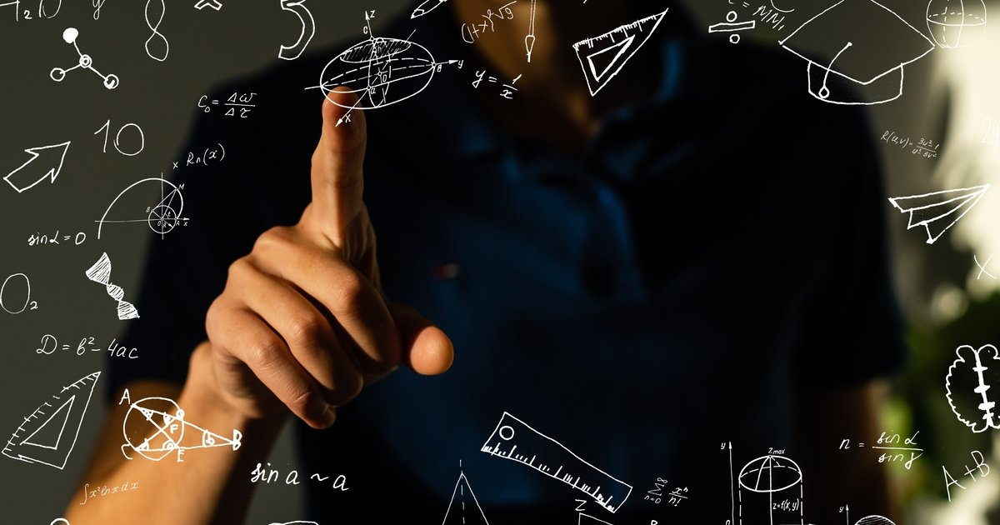
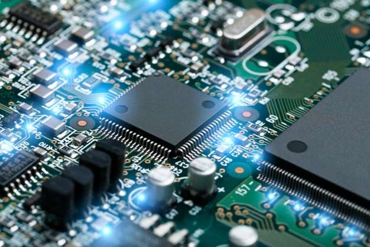

Comprender estos símbolos y cómo funcionan juntos y proporcionar estructura a las ecuaciones permite a los matemáticos escribir fórmulas de manera más eficiente y resolver problemas matemáticos. Excelente para la comprendesion de la estructura y logica de programacion

La programación informática es todo proceso que involucra el diseño, codificación, mantenimiento, y protección de cualquier fuente de programas. El objetivo principal de la programación informática es la creación de softwares, con el fin de ser ejecutados a través de computadoras, programas o plataformas. Como tal comprender distintos algoritmos y logica a sido uno de mis retos para seguir estudiando

Un Sistema Digital es aquel que recibe información de tipo discreta, la procesa convenientemente y luego la transmite de acuerdo a lo establecido. Antes de iniciar la etapa de diseño, realizaremos una serie de definiciones, con el objeto de uniformizar la nomenclatura a utilizar en tal proceso.Pueden encontrarse dos tipos de sistemas digitales: Combinacionales: Las salidas sólo dependen de las entradas en el instante dado. Como por ejemplo, las compuertas lógicas. Secuenciales: Las salidas dependen de las entradas y del estado anterior. Como por ejemplo, los Flip Flops. Comprender fundamentos y circuitos para mi fue esencial para resolver algoritmos.
